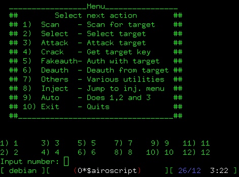

That's it! Airoscript now can be used trought screen. You don't need any fancy x-terminals or even a X-server to run it! :-)

Obviously, you don't need any mouse, x server, x terminal, etc.
Just aircrack-ng and it's normal dependences.
You can even make a minimal distro with it,
your laptop's battery life will be longer,
your hand's life will be longer (no mouse required ;-) ) etc.
This is not a basic "airoscript" usage but a basic "screen" usage, for more info, see screen documentation.